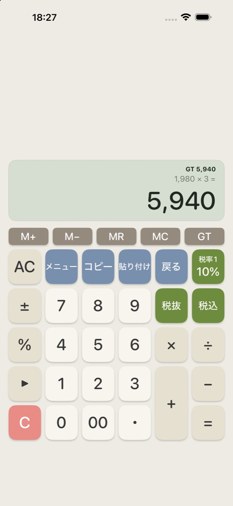
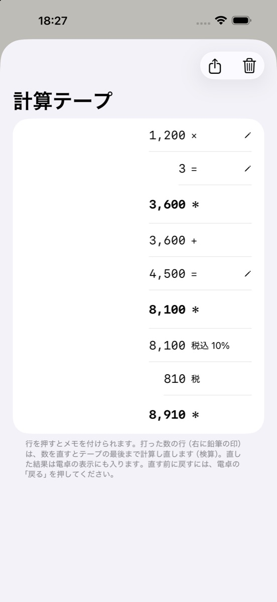
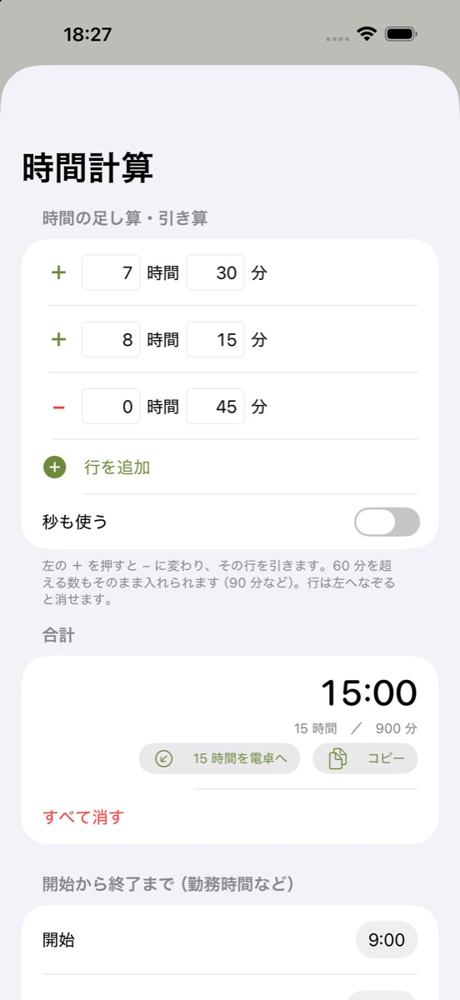
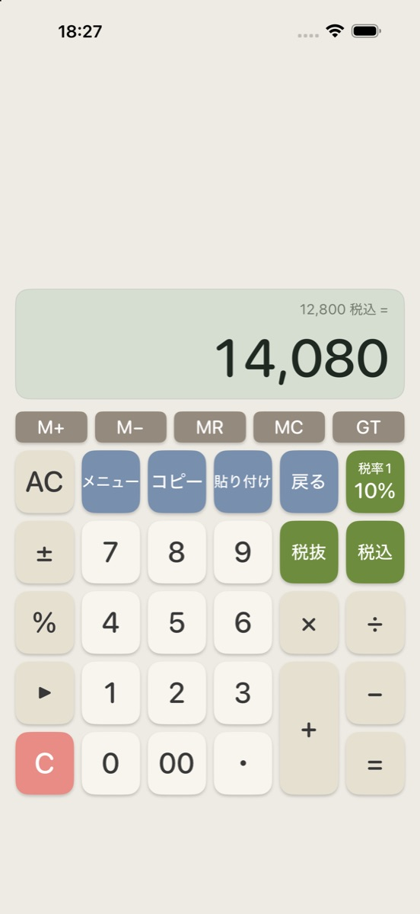
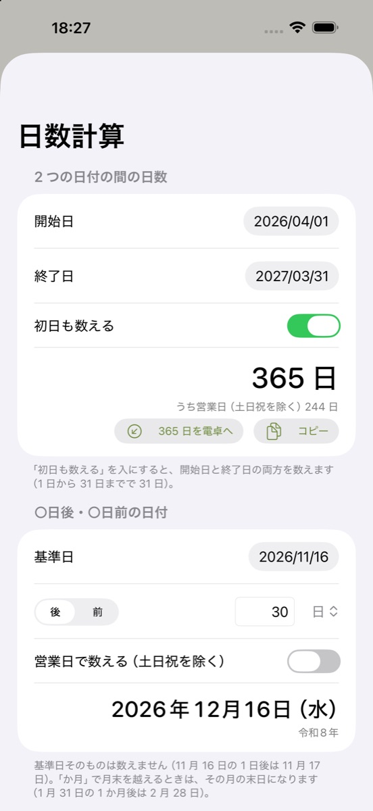
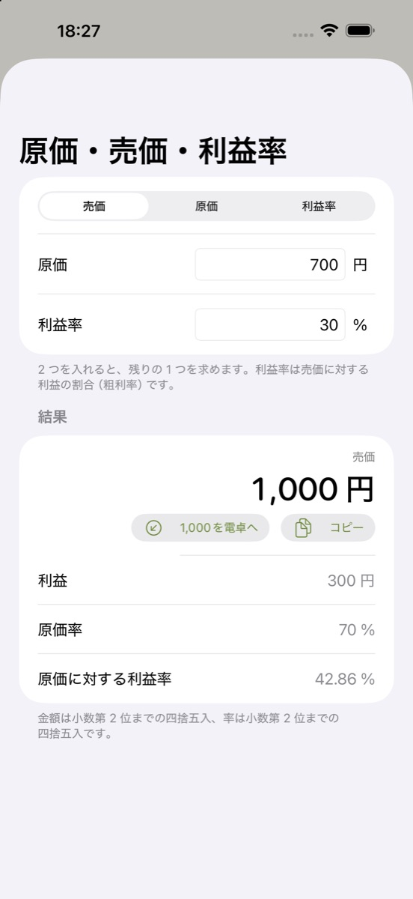
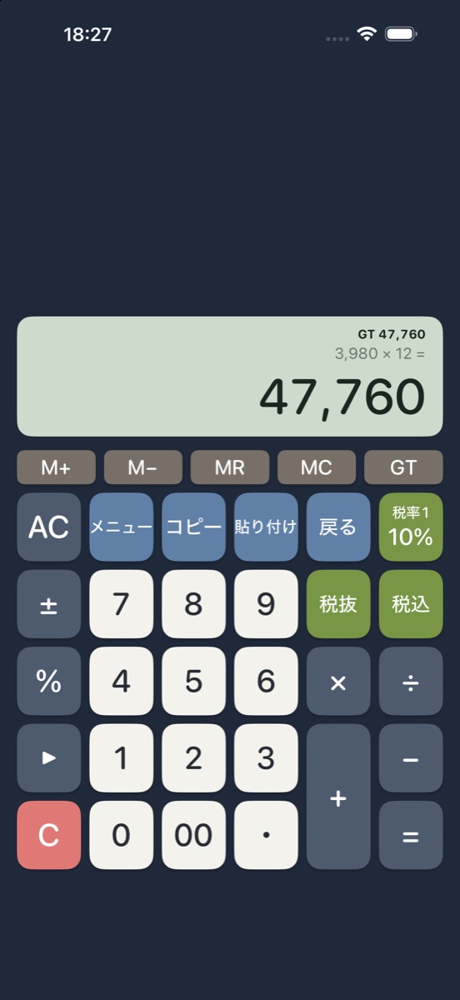
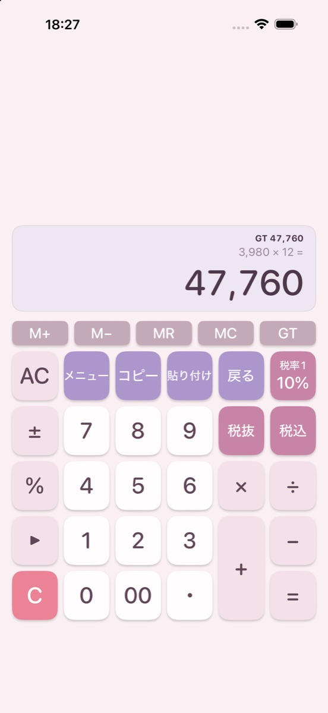
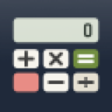

事務電卓
机の上の実務電卓を、そのまま手元に。
押した順に左から計算し、税込・税抜、%、メモリー、GT（累計）、00 キーを備えた電卓です。計算した数字はワンタップでコピー。勤務時間の合計や支払期日を出す「時間計算」「日数計算」も付いています。
- iPhone
- iPad
- Mac
- 基本の機能は無料
- プロ機能は買い切り



いつもの電卓の手順のまま
優先順位を付けず、押した順に計算する。事務の現場で使ってきた電卓と同じ動きなので、手が迷いません。
押した順に計算
実務電卓と同じく、押した順に左から計算。「=」を続けて押すと直前の計算を繰り返します（定数計算）。
税込・税抜・%
税率を掛けた金額・割った金額をボタン1つで。もう一度押すと税額に。税率は切り替え・登録ができます。割引・割増の % も。
コピーと貼り付け
表示中の数字を3桁区切りなしでコピー。ほかのアプリの数字を貼り付けて続きの計算も（「,」「¥」「円」は取り除いて読みます）。
戻る
計算結果が変わる直前の状態へ、1つずつ戻せます。押し間違えても最初からやり直さずに済みます。
時間計算・日数計算無料
勤務時間の合計、開始と終了からの働いた時間、日付の間の日数（営業日も）、支払期日まで。
計算テープと検算プロ機能
プリンター電卓の紙テープのように1行ずつ残し、途中の数を直して最後まで計算し直せます。PDF・CSV・印刷にも。
原価・売価・利益率プロ機能
3つのうち2つを入れると、残りの1つを求めます。
Mac の表へ送る
iPhone で「送る」を押すと、Mac で選んでいる表のセルに数字が入ります（受け取り用の無料アプリを Mac に入れます）。
画面
横にすべらせると、ほかの画面も見られます。





使い方
- 数字と四則演算のキーで計算します。優先順位は無く、押した順に左から計算します。「=」を続けて押すと直前の演算を繰り返します（定数計算）。
- 「税込」「税抜」で、表示中の数字に税率を掛けた（割った）金額を出します。もう一度押すと税額に切り替わります。税率は「税率」キーで切り替え、登録・削除は「メニュー」の「税率（%）」で行います。
- 「コピー」で表示中の数字を 3 桁区切りなしでコピーします。「貼り付け」でクリップボードの数字を表示に入れます（「,」「¥」「円」は取り除いて読みます）。
- 「戻る」で、計算結果が変わる直前の状態に 1 つずつ戻せます。
- 「メニュー」の「Mac に送る」をオンにすると「送る」ボタンが出て（「メニュー」は M+ の左へ移ります）、計算した数字を Mac の表のセルに直接入れられます（下の「Mac に送る」を参照）。
- 「メニュー」から、計算の履歴、小数点以下の桁数と端数処理、税率、配色、キーの説明が見られます。
- 「メニュー」の「計算の道具」から、時間計算・日数計算・原価と利益率の計算を開けます（下の「計算の道具」を参照）。
計算の道具
「メニュー」の「計算の道具」から開きます。
時間計算（無料）
時間と分を 1 行ずつ入れると、合計を「時間:分」と小数の時間（7 時間 30 分なら 7.5 時間）で出します。行の左の「＋」を押すと「−」に変わり、その行を引きます。開始と終了の時刻と休憩から、働いた時間も出せます。終了が開始より前のときは、日をまたいだものとして計算します。「電卓へ」を押すと、小数の時間を電卓に入れて、時給を掛けるなどの続きの計算ができます。
日数計算（無料）
2 つの日付の間の日数（土日祝を除いた営業日の数も）、何日後・何か月後の日付、締め日と支払日からの支払期日を出します。「初日も数える」をオンにすると、開始日と終了日の両方を数えます。日付は日本時間で数えます。
原価・売価・利益率（プロ機能）
原価・売価・利益率のうち 2 つを入れると、残りの 1 つを求めます。利益率は売価に対する利益の割合（粗利率）です。
プロ機能（計算テープ・検算・原価と利益率）
次の機能は、一度だけ購入すると使えるようになる「プロ機能」です。月額ではありません。ほかの機能は購入しなくてもすべて使えます。
- 計算テープ：プリンター電卓の紙テープのように、打った数と押したキーを 1 行ずつ残します。行を押すと品名などのメモを付けられます。右上のボタンから PDF・CSV での保存と共有、印刷ができます。
- 検算：テープの中の、自分で打った数の行（鉛筆の印が付いた行）を押して数を直すと、テープの最後まで計算し直します。直した結果は電卓の表示にも入ります。直す前に戻したいときは、電卓の「戻る」を押してください。
- 原価・売価・利益率：上の「計算の道具」を参照してください。
購入は「メニュー」の「計算テープ」か「原価・売価・利益率」を開くと出る画面から行います。購入したときと同じ Apple アカウントなら、機種を変えたり入れ直したりしても、「購入を復元」で再び使えるようになります。
Mac に送る（事務電卓レシーバー）

iPhone / iPad の事務電卓で「送る」を押すと、Mac でいま選んでいるセル（Excel・Numbers・Google スプレッドシートなど）に計算した数字が入ります。Mac には受け取り用のアプリ「事務電卓レシーバー」（無料）を入れておきます。
iPhone と Mac が同じ Wi-Fi にいればその Wi-Fi で、いなければ AirDrop と同じ仕組みで直接届きます。どちらを使うかは自動で選びます（両方の Wi-Fi がオンで、近くにあることが条件です）。
macOS 14 以降。iPhone / iPad 側は事務電卓 1.2 以降が必要です。Apple の公証を受けたアプリです。
Mac に入れる
- 上のボタンでダウンロードし、「ダウンロード」フォルダの JimuDentakuReceiver.zip をダブルクリックして開きます。「事務電卓レシーバー」が出てきます。
- 「事務電卓レシーバー」を Finder の「アプリケーション」フォルダへドラッグします（ダウンロードフォルダのまま使うと、許可の設定が保たれないことがあります）。
- 「アプリケーション」フォルダで「事務電卓レシーバー」をダブルクリックします。インターネットから入手したアプリかを確かめる画面が出たら「開く」を押します。
- 「アクセシビリティ」の許可を求められたら「システム設定を開く」を押し、一覧の「事務電卓レシーバー」のスイッチをオンにします。受け取った数字を他のアプリに入力するために必要です。
- 画面上端のメニューバーに、四角に「#」のアイコンが出ていれば準備完了です。アイコンを押して「ログイン時に起動」をオンにしておくと、次から自動で起動します。
iPhone / iPad で使う
- 事務電卓の「メニュー」で「Mac に送る」をオンにします。ローカルネットワークの許可を求められたら「許可」を押します。
- 見つかった Mac の名前が一覧に出ます。複数あるときは送り先を選びます。
- Mac で数字を入れたいセルを選び、iPhone で「送る」を押します。
- 初めて送ったときは、Mac に「受け取りますか？」と確認が出ます。「受け取る」を押してから、もう一度「送る」を押してください。次からは確認なしで入ります。
数字を入れたあとに押すキー（下矢印・右矢印・Return・Tab・何も押さない）は、Mac のメニューバーのアイコンの「入力したあとに押すキー」で選べます。初めは下矢印で、Excel でも Google スプレッドシートでも下のセルへ移ります（スプレッドシートでは Return を押すとセルの編集が始まるため、矢印をおすすめします）。Mac に届かなかったときは、数字を iPhone のクリップボードに入れておくので、Mac で ⌘V で貼れます。
よくある質問
2 + 3 × 4 が 20 になります
実務電卓と同じく、優先順位を付けずに押した順に計算する仕様です。2 + (3 × 4) を求めたいときは 3 × 4 を先に計算してから 2 を足してください。
「貼り付け」を押すと「ペーストを許可しますか」と聞かれます
iPhone / iPad では、他のアプリでコピーした内容を読むときに OS が確認を出します。アプリ側では止められません。毎回聞かれないようにするには、iPhone / iPad の「設定」で「事務電卓」を開き、「ほかのAppからペースト」を「許可」にしてください。
液晶の左上にクリップボードの数字を自動で出したい（iPhone / iPad）
上の設定を「許可」にしたうえで、「メニュー」の「クリップボードの数字を自動で表示」をオンにしてください。Mac では設定なしで自動で表示されます。
割り算の結果が思ったより粗い
「メニュー」で小数点以下の桁数を指定すると、途中の結果もその桁数に丸めます（実務電卓と同じ動きです）。細かい結果が欲しいときは桁数を「F」にしてください。
アプリを開き直すと表示が 0 に戻っています
仕様です。計算の状態と履歴は保存せず、起動するたびに 0 から始まります。税率や桁数などの設定は保存されます。
「Mac が見つかりません」と出ます
Mac で事務電卓レシーバーが起動しているか（メニューバーにアイコンがあるか）、iPhone と Mac の Wi-Fi がオンになっているかを確かめてください。iPhone では「設定」の「事務電卓」で「ローカルネットワーク」がオンになっている必要があります。
「Mac で受け取りを断られています」と出ます
初回の確認で「断る」を押した場合です。Mac のメニューバーのアイコンから「受け取る端末」→「断った端末をすべて忘れる」を押し、もう一度送ってください。
事務電卓レシーバーを新しい版にしたい
メニューバーのアイコンから「事務電卓レシーバーを終了」を押し、上のボタンからダウンロードし直して、「アプリケーション」フォルダの古いものと置き換えてください。いまの版は、メニューバーのアイコンを押したときの一番下に出ます。置き換えたあとアイコンにびっくりマークが出たら、「システム設定」の「プライバシーとセキュリティ」→「アクセシビリティ」で、事務電卓レシーバーのスイッチを一度オフにしてからオンにしてください。
事務電卓レシーバーを取り除きたい
メニューバーのアイコンから「事務電卓レシーバーを終了」を押し、「アプリケーション」フォルダの「事務電卓レシーバー」をゴミ箱に入れてください。
プロ機能を購入したのに使えません／機種を変えたら使えなくなりました
「メニュー」の一番下にある「購入を復元」を押してください。購入したときと同じ Apple アカウントでサインインしている必要があります。
計算テープはいつ消えますか
履歴と同じく、アプリを閉じると消えます。残しておきたいときは、テープの画面の右上のボタンから PDF か CSV で保存してください。
日数計算の祝日が実際と違います
祝日は法律の決まりから計算しています。新しく決まった休日や、法律が変わった場合には、アプリの更新まで反映されないことがあります。お気づきの点はお問い合わせ先までお知らせください。
表示が E になりました
12 桁を超えたか、0 で割ったときのエラー表示です。「AC」か「C」で解除してください。